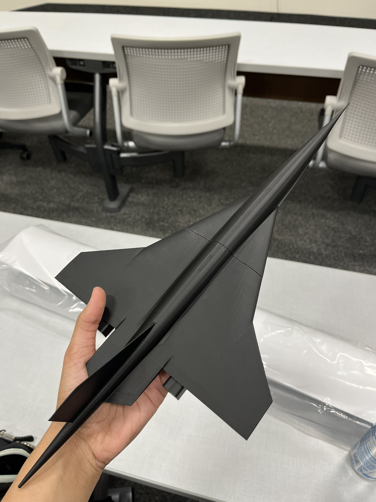
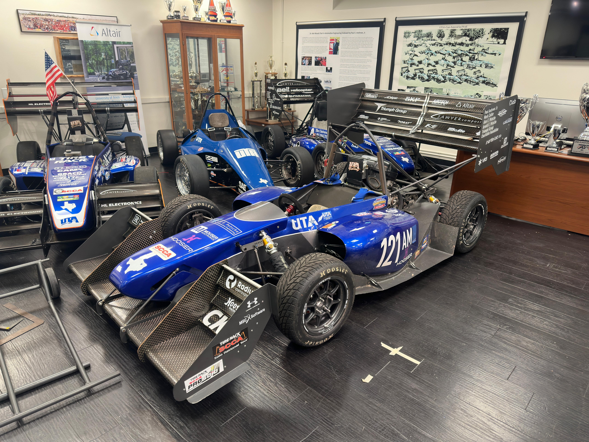
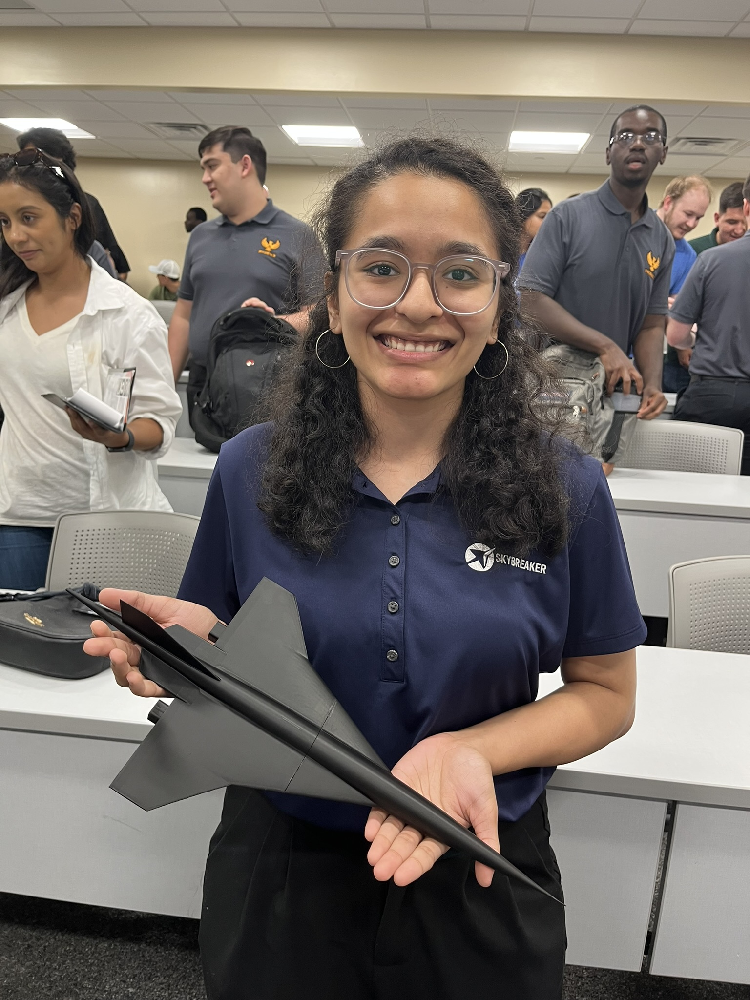
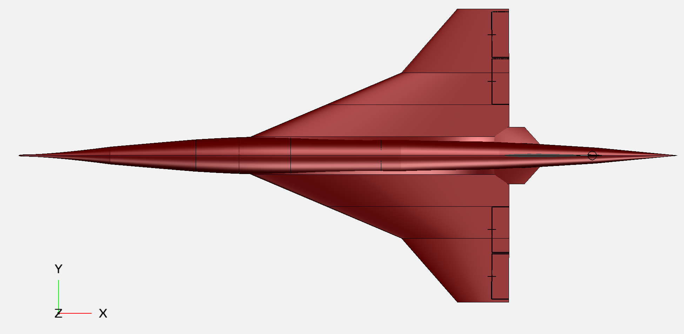
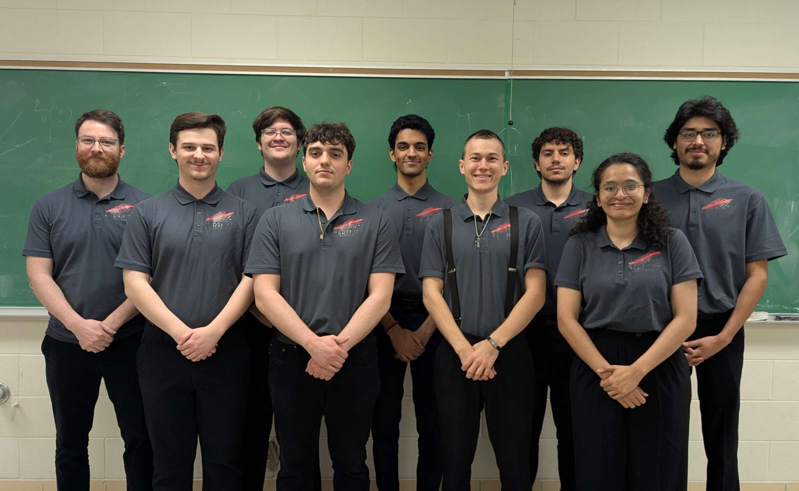
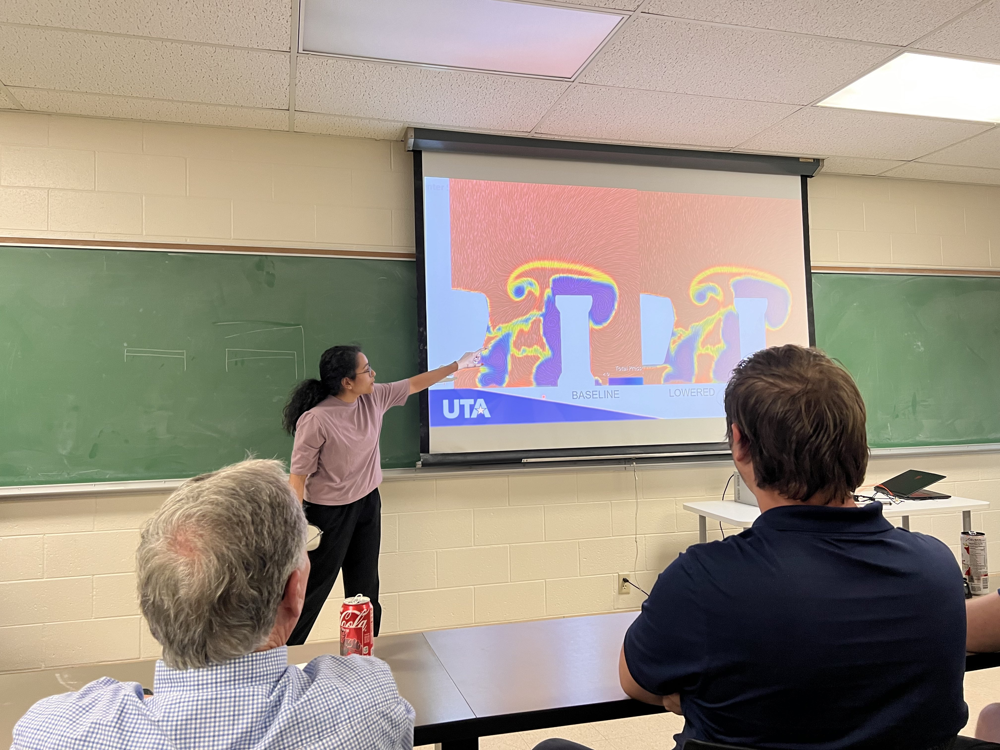

Conceptual Design of Supersonic Business Jet
Aerodynamics & aerothermodynamics lead for a Mach 1.7 SBJ concept.
Researching RDE aerospike nozzles and building simulation and test tooling. Interested in CFD, ML for fluids, and space systems.
Quick stats and links

Aerodynamics & aerothermodynamics lead for a Mach 1.7 SBJ concept.

Performed aerodynamic and stability analysis of a Martian Starship concept, optimizing lift-to-drag and control margins.

+12% downforce and −7% drag via STAR‑CCM+ sweeps.
PID Controlled ball banacing screen, with a Bluetooth module for accurate positioning of the ball.
AIAA Region IV Student Conferences · 2025
First‑author. Transient aerospike nozzle flowfields with modal analysis for RDE applications.
DOI →AIAA Region IV Student Conferences · 2024
Co‑author. CFD and machine learning workflow for RDE aerospike nozzle design.
DOI →Organizations: AIAA, Honors College Council, SASE. Certification: Machine Learning Specialization (Stanford & DeepLearning.AI).
Outstanding Second Year Leader, inSTEM Scholar, Maverick Academic Scholar, Outstanding AIAA Student Award, Freshman Honor Roll.
The SkyBreaker project focused on the conceptual and preliminary design of a Trans-Pacific Supersonic Business Jet (SSBJ) capable of nonstop flight from Los Angeles (LAX) to Tokyo (NRT) at Mach 1.7 using 100% Sustainable Aviation Fuel (SAF). The mission sought to balance speed, efficiency, environmental compliance, and comfort, all within the ICAO Chapter 14 noise standards and a maximum takeoff gross weight (TOGW) of approximately 100,000 lb (≈ 45,359 kg)
The team implemented a multidisciplinary conceptual design process consisting of:
The iterative design converged on a configuration featuring high aerodynamic efficiency (L/D ≈ 7–8), a Mach 2.1 design point, and feasible performance across all mission phases.


As the Aerodynamics & Aerothermodynamics Lead, and a secondary in Stability & Control, I was responsible for:
The SkyBreaker study produced a validated conceptual design that demonstrated both technical and environmental feasibility for future supersonic business travel. The integration of your aerodynamic modeling established a robust foundation for high-speed flight efficiency, shaping the project’s final configuration and performance envelope.

This project aimed to reverse-engineer and analyze SpaceX’s Starship for Martian and Earth re-entry conditions. The study focused on achieving high aerodynamic efficiency, controllability, and thermal protection performance during hypersonic descent through rarefied Martian atmosphere and dense Earth reentry flow. The redesigned configuration achieved an estimated lift-to-drag ratio (L/D) of 4–5 on Mars and >8 during Earth reentry, ensuring a smooth, stable descent profile .


The team used OpenVSP for 3D modeling, MATLAB for creating an analytical model for aerodynamic coefficient prediction, and for flight performance and control margin calculations. Dynamic stability was analyzed through pitching moment derivatives and control surface sizing, while thermal considerations were informed by convective heating correlations.Analyses compared flight behavior in CO₂-rich Martian atmosphere (low Reynolds number, low density) with Earth’s high dynamic pressure regime, identifying fin and strake adjustments necessary to maintain longitudinal control.

As lead for Aero & S&C, I coordinated geometry modifications, aerodynamic analysis, control-surface sizing, and final presentation. Collaborated with RedShift Dynamics team members responsible for structures, thermal systems, and systems integration.

The redesign demonstrated that a refined Starship configuration could achieve the desired Martian glide ratio and control stability, supporting future interplanetary reentry vehicle studies. Recommendations included further CFD validation, material testing, and integration of reaction control system effects for precise descent control.
Optimized UTA Racing A‑modified car aero. 3,000 STAR‑CCM+ RANS iterations across ride‑height and wing‑angle sweeps delivered +12% downforce and −7% drag, improving balance and moving CP by ~5%.

Optimized UTA Racing A‑modified car aero. 3,000 STAR‑CCM+ RANS iterations across ride‑height and wing‑angle sweeps delivered +12% downforce and −7% drag, improving balance and moving CP by ~5%.